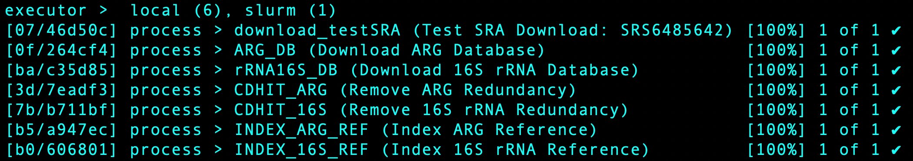
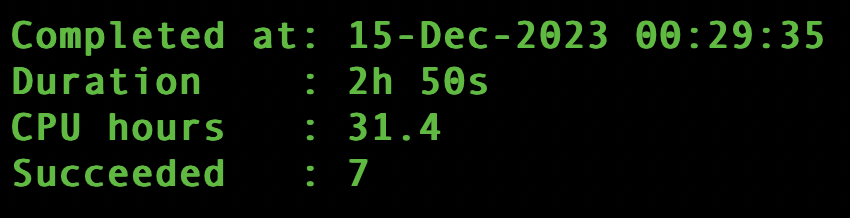
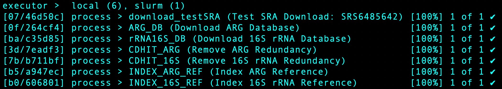
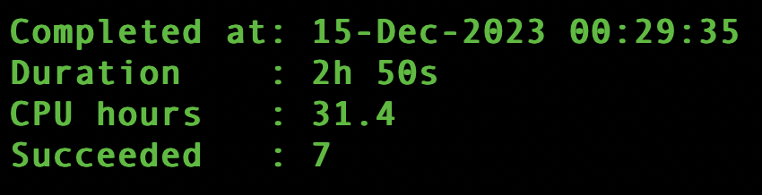
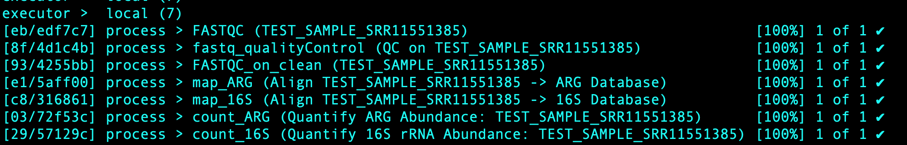
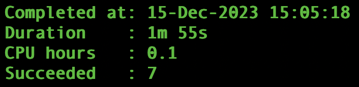
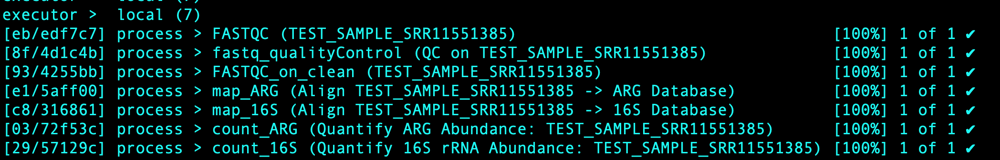
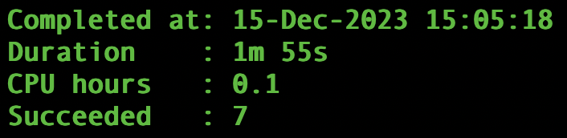

References
Nextflow Documentation
Visit the Nextflow Documentation website to learn more about this workflow manager.
Processes: modules.nf
Source Code:
/*
start.nf modules
*/
/*
* Process 0A: Download ARG Database
*/
process ARG_DB {
tag "Download ARG Database"
publishDir params.DBdir, mode: 'copy', overwrite: false
input:
val(params.ARG_db_URL)
output:
file(params.ARG_db)
script:
/* temporarily does not accomadate a different ARG database due to the tarball */
"""
wget ${params.ARG_db_URL}
tar -xf broadstreet-v3.2.2.tar.bz2
mv nucleotide_fasta_protein_homolog_model.fasta ${params.ARG_db}
"""
}
/*
* Process 0B: Download 16S rRNA Database
*/
process rRNA16S_DB {
tag "Download 16S rRNA Database"
publishDir params.DBdir, mode: 'copy', overwrite: false
input:
val(params.rRNA16S_db_URL)
output:
file(params.rRNA16S_db)
/* temporarily does not accomadate a different 16S database due to nomenclature */
script:
"""
wget ${params.rRNA16S_db_URL}
mv gg_12_10.fasta.gz ${params.rRNA16S_db}
"""
}
/*
* Process 0C: Cluster ARG Database
*/
process CDHIT_ARG {
tag "Remove ARG Redundancy"
publishDir params.DBdir, mode: 'copy', overwrite: false
input:
file(params.ARG_db)
output:
file(params.ARG_db_NR)
script:
"""
/mnt/research/qgg/software/cd-hit-4.8.1/cd-hit-est -i ${params.ARG_db} -o ${params.ARG_db_NR} -c 0.99 -G 0 -M 0 -T 0 -aS 0.9 -g 1 -d 0
"""
}
/*
* Process 0D: Cluster 16S rRNA Database
*/
process CDHIT_16S {
tag "Remove 16S rRNA Redundancy"
publishDir params.DBdir, mode: 'copy', overwrite: false
/* slurm resources */
executor 'slurm'
memory '100 GB'
cpus 16
time '12h'
input:
file(params.rRNA16S_db)
output:
file(params.rRNA16S_db_NR)
script:
"""
/mnt/research/qgg/software/cd-hit-4.8.1/cd-hit-est -i ${params.rRNA16S_db} -o ${params.rRNA16S_db_NR} -c 0.99 -G 0 -M 0 -T 0 -aS 0.9 -g 1 -d 0
"""
}
/*
* Process 0E: Index ARG Database
*/
process INDEX_ARG_REF {
tag "Index ARG Reference"
publishDir params.DBdir, mode: 'copy', overwrite: false
/* slurm resources */
memory '100 GB'
cpus 16
time '12h'
input:
file(params.ARG_db_NR)
output:
tuple file(params.ARG_db_NR), path("${params.ARG_db_NR}.{amb,ann,bwt,pac,sa}")
script:
"""
bwa index -a bwtsw ${params.ARG_db_NR}
"""
}
/*
* Process 0F: Index 16S rRNA Database
*/
process INDEX_16S_REF {
tag "Index 16S rRNA Reference"
publishDir params.DBdir, mode: 'copy', overwrite: false
/* slurm resources */
memory '100 GB'
cpus 16
time '12h'
input:
file(params.rRNA16S_db_NR)
output:
tuple file(params.rRNA16S_db_NR), path("${params.rRNA16S_db_NR}.{amb,ann,bwt,pac,sa}")
script:
"""
bwa index -a bwtsw ${params.rRNA16S_db_NR}
"""
}
/*
* Process 0G: Download Test SRA Data for main.nf
*/
process download_testSRA {
tag "Test SRA Download: $params.test_SRA_ID"
publishDir params.readsDir, mode: 'copy', overwrite: false
input:
tuple val(SRA_ID), val(fastqURLs)
output:
tuple file("TEST_SAMPLE_${SRA_ID}_1.fastq.gz"), file("TEST_SAMPLE_${SRA_ID}_2.fastq.gz")
script:
"""
wget ftp://ftp.sra.ebi.ac.uk${fastqURLs[0]}
mv *_1.fastq.gz TEST_SAMPLE_${SRA_ID}_1.fastq.gz
wget ftp://ftp.sra.ebi.ac.uk${fastqURLs[1]}
mv *_2.fastq.gz TEST_SAMPLE_${SRA_ID}_2.fastq.gz
"""
}
/*
main.nf modules
*/
/*
* Process 1A: Run FastQC
*/
process FASTQC {
tag "${sample_id}"
publishDir params.QC_files, mode: 'copy', overwrite: true
input:
tuple val(sample_id), file(reads)
output:
path "${sample_id}_fastqc.log"
script:
"""
fastqc --outdir $params.QC_files ${reads[0]} ${reads[1]} > ${sample_id}_fastqc.log
"""
}
/*
* Process 1B: Quality Control ~ Adapter Trimming, Quality Filtering, Read Trimming
*/
process fastq_qualityControl {
tag "QC on $sample_id"
publishDir params.clean_reads, mode: 'copy', overwrite: true
input:
tuple val(sample_id), file(reads)
output:
tuple val("$sample_id"), path("${sample_id}_*.clean_*.fastq.gz")
script:
"""
/mnt/research/qgg/software/bbmap/bbduk.sh in1=${reads[0]} in2=${reads[1]} out1=${sample_id}_1.clean_1.fastq.gz out2=${sample_id}_2.clean_2.fastq.gz outm=${sample_id}_1.outm_1.fastq.gz outm2=${sample_id}_2.outm_2.fastq.gz outs=${sample_id}.outs.fastq.gz ref=/mnt/research/qgg/software/bbmap/resources/adapters.fa qtrim=r trimq=20 minlen=50
"""
}
/*
* Process 1C: Run FastQC on Clean Reads
*/
process FASTQC_on_clean {
tag "${sample_id}"
publishDir params.QC_files, mode: 'copy', overwrite: true
input:
tuple val(sample_id), file(reads)
output:
path "${sample_id}_clean_fastqc.log"
script:
"""
fastqc --outdir $params.QC_files ${reads[0]} ${reads[1]} > ${sample_id}_clean_fastqc.log
"""
}
/*
* Process 2A: Align to ARG Reference: CARD
*/
process map_ARG {
tag "Align ${sample_id} -> ARG Database"
publishDir params.outdir, mode: 'copy', overwrite: true
input:
tuple val(sample_id), path(clean_reads)
output:
tuple val("$sample_id"), path("${sample_id}_ARG.bam")
script:
"""
bwa mem -t 8 ${params.CARD_db} ${clean_reads[0]} ${clean_reads[1]} 2> ${sample_id}_ARG_bwaMem.err | samtools view -bS - > ${sample_id}_ARG.bam 2> ${sample_id}_ARG_samtoolsView.err
"""
}
/*
* Process 2B: Align to 16S rRNA Reference: GreenGenes
*/
process map_16S {
tag "Align ${sample_id} -> 16S Database"
publishDir params.outdir, mode: 'copy', overwrite: true
input:
tuple val(sample_id), path(clean_reads)
output:
tuple val("$sample_id"), path("${sample_id}_16S.bam")
script:
"""
bwa mem -t 8 ${params.GG_db} ${clean_reads[0]} ${clean_reads[1]} 2> ${sample_id}_16S_bwaMem.err | samtools view -bS - > ${sample_id}_16S.bam 2> ${sample_id}_16S_samtoolsView.err
"""
}
/*
* Process 3A: Gene Quantification ~ ARGs
*/
process count_ARG {
tag "Quantify ARG Abundance: ${sample_id}"
publishDir params.outdir, mode: 'copy', overwrite: true
input:
tuple val(sample_id), path(bam)
output:
tuple val("$sample_id"), path("${sample_id}_absAbun_ARG")
shell:
'''
join -t $'\t' -a 1 -a 2 -e - -o '0,1.2,2.2,1.3,2.3' <(samtools view -q 1 -f 0x40 !{bam} | cut -f 1,3,5 | sort -k 1,1) <(samtools view -q 1 -F 0x40 !{bam} | cut -f 1,3,5 | sort -k 1,1) | perl -wne 'chomp $_; @line = split /\t/, $_; if ($line[1] eq $line[2]) { print $line[0], "\t", $line[1], "\n"; } elsif ( $line[1] eq "-" ) { print $line[0], "\t", $line[2], "\n"; } elsif ( $line[2] eq "-" ) { print $line[0], "\t", $line[1], "\n"; } elsif ($line[3] >= $line[4]) { print $line[0], "\t", $line[1], "\n"; } else { print $line[0], "\t", $line[2], "\n"; }' | awk '{print $1"::::"$2}' | sort -k1,1 | bedtools groupby -g 1 -c 1 -o collapse,count | sed 's/::::/\t/' | sort -k1,1 | bedtools groupby -g 1 -c 2,4,4 -o collapse,collapse,sum | perl -wne 'chomp $_; @line = split /\t/, $_; @genes = split /,/, $line[1]; @counts = split /,/, $line[2]; for (my $i = 0; $i <= $#genes; $i++) { print $genes[$i], "\t", $counts[$i]/$line[3], "\n"; }' | sort -k1,1 | bedtools groupby -g 1 -c 2 -o sum > !{sample_id}_absAbun_ARG
'''
}
/*
* Process 3B: Gene Quantification ~ 16S rRNA
*/
process count_16S {
tag "Quantify 16S rRNA Abundance: ${sample_id}"
publishDir params.outdir, mode: 'copy', overwrite: true
input:
tuple val(sample_id), path(bam)
output:
tuple val("$sample_id"), path("${sample_id}_absAbun_16S")
shell:
'''
join -t $'\t' -a 1 -a 2 -e - -o '0,1.2,2.2,1.3,2.3' <(samtools view -q 1 -f 0x40 !{bam} | cut -f 1,3,5 | sort -k 1,1) <(samtools view -q 1 -F 0x40 !{bam} | cut -f 1,3,5 | sort -k 1,1) | perl -wne 'chomp $_; @line = split /\t/, $_; if ($line[1] eq $line[2]) { print $line[0], "\t", $line[1], "\n"; } elsif ( $line[1] eq "-" ) { print $line[0], "\t", $line[2], "\n"; } elsif ( $line[2] eq "-" ) { print $line[0], "\t", $line[1], "\n"; } elsif ($line[3] >= $line[4]) { print $line[0], "\t", $line[1], "\n"; } else { print $line[0], "\t", $line[2], "\n"; }' | awk '{print $1"::::"$2}' | sort -k1,1 | bedtools groupby -g 1 -c 1 -o collapse,count | sed 's/::::/\t/' | sort -k1,1 | bedtools groupby -g 1 -c 2,4,4 -o collapse,collapse,sum | perl -wne 'chomp $_; @line = split /\t/, $_; @genes = split /,/, $line[1]; @counts = split /,/, $line[2]; for (my $i = 0; $i <= $#genes; $i++) { print $genes[$i], "\t", $counts[$i]/$line[3], "\n"; }' | sort -k1,1 | bedtools groupby -g 1 -c 2 -o sum > !{sample_id}_absAbun_16S
'''
}
Workflow: start.nf
Source Code:
#!/usr/bin/env nextflow
/*
* A Nextflow pipeline to download default databases & test data for main animalARG workflow.
*/
/*
* The following pipeline parameters specify the reference genomes
* and read pairs that will be donwnloaded for future use by animalARG.
*/
params.SRA_IDs = "None Identified by User"
params.test_SRA_ID ='SRS6485642'
params.ARG_db = "ARG_referenceDB.fasta"
params.ARG_db_URL = "https://card.mcmaster.ca/download/0/broadstreet-v3.2.2.tar.bz2"
params.ARG_db_NR = "ARG_referenceDB_NR99.fasta"
params.rRNA16S_db = "16SrRNA_referenceDB.fasta.gz"
params.rRNA16S_db_URL = "https://gg-sg-web.s3-us-west-2.amazonaws.com/downloads/greengenes_database/gg_12_10/gg_12_10.fasta.gz"
params.rRNA16S_db_NR = "16SrRNA_referenceDB_NR99.fasta.gz"
params.DBdir = "$baseDir/data/DB/"
params.readsDir = "$baseDir/data/reads/"
/*
* Indicate important info to user when script is run on the command line.
*/
log.info """\
Download Defaults
===============================
SRA IDs : $params.SRA_IDs
ARG Database : $params.ARG_db_URL
16S Database : $params.rRNA16S_db_URL
"""
/*
* Enable DSL 2 syntax
*/
nextflow.enable.dsl = 2
/*
* Import modules
*/
include {
ARG_DB
rRNA16S_DB
CDHIT_ARG
CDHIT_16S
INDEX_ARG_REF
INDEX_16S_REF
download_testSRA} from './modules.nf'
/*
* main bioinformatic pipeline
*/
workflow {
/* Download data for tutorial and tests, this will only be used later on by main.nf */
/* First we retrieve SRA ID infromation, including the URL needed for donwloading
this is accomplished via the built in nextflow function: fromSRA */
sra_test_ch = Channel
.fromSRA(params.test_SRA_ID)
.view()
/* Once we have the SRA ID, and a tuple of the two URLs, they are sent to the sra_test_ch
and then passed to the process download_testSRA to retreive the fastq files */
download_testSRA(sra_test_ch)
/* Download ARG Reference file via the default URL provided, this file is then
passed to the ARG_DB_ch for downstream processing */
ARG_DB_ch = ARG_DB (params.ARG_db_URL)
ARG_DB_ch.view()
/* Download 16S rRNA Reference file via the default URL provided, this file is then
passed to the rRNA16S_DB_ch for downstream processing */
rRNA16S_DB_ch = rRNA16S_DB (params.rRNA16S_db_URL)
rRNA16S_DB_ch.view()
/* Cluster the sequences in the downloaded ARG Reference file, pass NonRedundant file
to the ARG_DB_NR_ch for downstream processing */
ARG_DB_NR_ch = CDHIT_ARG (ARG_DB_ch)
ARG_DB_NR_ch.view()
/* Cluster the sequences in the downloaded 16S rRNA Reference file, pass NonRedundant file
to the rRNA16S_DB_NR_ch for downstream processing */
rRNA16S_DB_NR_ch = CDHIT_16S (rRNA16S_DB_ch)
rRNA16S_DB_NR_ch.view()
/* Index the NonRedundant ARG Reference file, store in params.DBdir
for downstream utilization via main.nf */
ARG_ref_idx_ch = INDEX_ARG_REF (ARG_DB_NR_ch)
ARG_ref_idx_ch.view()
/* Index the NonRedundant 16S rRNA Reference file, store in params.DBdir
for downstream utilization via main.nf */
rRNA16S_ref_idx_ch = INDEX_16S_REF (rRNA16S_DB_NR_ch)
rRNA16S_ref_idx_ch.view()
}
Expected Output:
 



Workflow: main.nf
Source Code:
#!/usr/bin/env nextflow
/*
* 'animal-ARG' - A Nextflow pipeline for estimating antimicrobial resistance gene abundance
*/
/*
* The following pipeline parameters specify the reference genomes
* and read pairs and can be provided as command line options
*/
params.SRA_IDs = "USER_Defined_List"
params.CARD_db = "$baseDir/data/DB/ARG_referenceDB_NR99.fasta"
params.GG_db = "$baseDir/data/DB/16SrRNA_referenceDB.fasta.gz"
params.reads = "$baseDir/data/reads/*_{1,2}.fastq.gz"
params.readDir = "$baseDir/data/reads/"
params.outdir = "$baseDir/results"
params.QC_files = "$baseDir/QCmetrics"
params.clean_reads = "$baseDir/data/cleanReads/"
/*
* Indicate important info to user when script is run on the command line.
*/
log.info """\
A N I M A L - A R G
===============================
SRA IDs : $params.SRA_IDs
Reads : $params.reads
ARG Database : $params.CARD_db
16S Database : $params.GG_db
QC Analysis : $params.QC_files
Results : $params.outdir
"""
/*
* Enable DSL 2 syntax
*/
nextflow.enable.dsl = 2
/*
* Import modules
*/
include {
FASTQC;
fastq_qualityControl;
FASTQC_on_clean;
map_ARG;
map_16S;
count_ARG;
count_16S} from './modules.nf'
/*
* main bioinformatic pipeline
*/
workflow {
/* this ouputs in tuple format of: [sampleID, [file1, file2]] */
read_pairs_ch = channel.fromFilePairs( params.reads, checkIfExists: true )
/* the checkIfExists function tests to make sure there is data present for futher analysis,
if not the process is aborted */
/* this ouputs in tuple format of: [sampleID, [file1, file2]] */
read_pairs_ch.view()
// Part 1: Quality Control
/* first lets peform FASTQC on the raw data for later reference by user */
fastqc_ch = FASTQC( read_pairs_ch )
fastqc_ch.view()
/* perform adapter trimming and read quality filtering via BBDuk and the
fastq_qualityControl process, qc_ch contains clean reads which is passed to next steps */
qc_ch = fastq_qualityControl( read_pairs_ch )
qc_ch.view()
/* following the execution of the fastq_qualityControl process we rerun FASTQC on the clean reads */
fastqc_clean_ch = FASTQC_on_clean( qc_ch )
fastqc_clean_ch.view()
// Part 2: Gene Mapping
/* clean reads found in qc_ch are aligned to the specified ARG reference */
bam_ARG_ch = map_ARG( qc_ch )
/* output file is .bam format, and contains results of mapping */
bam_ARG_ch.view()
/* clean reads found in qc_ch are aligned to the specified ARG reference */
bam_16S_ch = map_16S( qc_ch )
/* output file is .bam format, and contains results of mapping */
bam_16S_ch.view()
// Part 3: Gene Quantification
/* .bam file for each set of reads is passed to quantification process via bam_ARG_ch */
quant_ARG_ch = count_ARG ( bam_ARG_ch )
/* output file contains the absolute abundances found in sample of interest for
each reference gene specified in the nonredundant ARG reference file */
quant_ARG_ch.view()
/* .bam file for each set of reads is passed to quantification process via bam_16S_ch */
quant_16S_ch = count_16S ( bam_16S_ch )
/* output file contains the absolute abundances found in sample of interest for
each reference gene specified in the nonredundant 16S reference file */
quant_16S_ch.view()
}
Expected Output:
 


